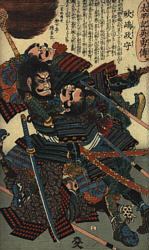

"En esencia, el Arte de la Guerra es el Arte de la Vida"
Sun Tzu fué un general chino que vivió alrededor del siglo V antes de Cristo. La colección de ensayos sobre el arte de la guerra atribuida a Sun Tzu es el tratado sobre dicho tema más antiguo que se conoce. A pesar de su antiguedad, esta obra domina sobre cualquier otra sobre el tema.
La obra de Sun Tzu llegó por primera vez a Europa en el periodo anterior a la Revolución Francesa, en forma de una breve traducción realizada por el sacerdote jesuita J. J. M. Amiot. En las diversas traducciones que se han hecho desde entonces, se nombra ocasionalmente al autor como Sun Wu o Sun Tzi.
El núcleo de la filosofía de Sun Tzu sobre la guerra descansa en estos dos principios:
Todo el Arte de la Guerra se basa en el engaño.El supremo Arte de la Guerra es someter al enemigo sin luchar.  Las ideas de Sun Tzu se extendieron por el resto de Asia hasta llegar a Japón. Los japoneses adoptaron rápidamente estas enseñanzas y, posiblemente, añadieron algunas de su propia cosecha. Hay constancia de que el principal libro japonés sobre el tema, "El libro de los Cinco Anillos", está influido por la filosofía de Sun Tzu, ya que su autor, Miyamoto Mushashi, estudió el tratado de "El Arte de la Guerra" durante su formación como Samurai.
Habitualmente se hace referencia a las culturas orientales como culturas de estrategia y no es pequeña la influencia de Sun Tzu en este desarrollo cultural. Hoy en día, la filosofía del arte de la guerra ha ido más allá de los límites estrictamente "militares", aplicandose a los negocios, los deportes, la diplomacia e incluso el comportamiento personal. Por ejemplo, muchas frases clave de los manuales modernos de gestión de empresas, son practicamente citas literales de la obra de Sun Tzu (cambiando, por ejemplo, ejercito por empresa, o armamento por recursos, sin ir más lejos). Las ideas siguen siendo completamente válidas a pesar de los 25 siglos transcurridos desde que se escribieron.
Una advertencia antes de comenzar: No es un libro "fácil". Conviene leerlo despacio meditando en el sentido de las ideas expresadas en las frases, no quedándose en la cita literal. Solo de esta forma se podrá sacar el máximo provecho a su estudio. Personalmente, lo considero una lectura imprescindible para la formación de un artista marcial.
Que lo disfruteis.
La guerra es un asunto de importancia vital para el Estado; un asunto de vida o muerte, el camino hacia la supervivencia o la destrucción. Por lo tanto, es imperativo estudiarla profundamente.
Hay que valorarla en términos de cinco factores fundamentales, y hacer comparaciones entre diversas condiciones de los bandos antagonistas, de cara a determinar el resultado de la contienda.
El primero de estos factores es la política; el segundo, el clima; el tercero, el terreno; el cuerto, el comandante; y el quinto, la doctrina. La política significa aquello que hace que el pueblo esté en armonía con su gobernante, de modo que le siga donde sea, sin temer por sus vidas ni a correr cualquier peligro. El clima significa la noche y el día, el frío y el calor, dias despejados o lluviosos, y el cambio de las estaciones. El terreno implica las distancias, y hace referencia a dónde es fácil o difícil desplazarse, y si es campo abierto o lugares estrechos, y esto influencia las posibilidades de supervivencia. El comandante ha de tener como cualidades: sabiduría, sinceridad, benevolencia, coraje y disciplina. Por último, la doctrina ha de ser comprendida como la organización del ejército, las graduaciones y rangos entre los oficiales, la regulación de las rutas de suministros, y la provisión de material militar al ejército.
Estos cinco factores fundamentales han de ser conocidos por cada general. Aquel que los domina, vence; aquel que no, sale derrotado. Por lo tanto, al trazar los planes, han de compararse los siguiente siete factores, valorando cada uno con el mayor cuidado:
Mediante el estudio de estos siete factores, seré capaz de adivinar cual de los dos bandos saldrá victorioso y cual será derrotado.
El general que siga mi consejo, es seguro que vencerá. Ese general ha de ser mantenido al mando. Aquel que ignore mi consejo, ciertamente será derrotado. Ese debe ser destituido.
Tras prestar atención a mi consejo y planes, el general debe crear una situación que contribuya a su cumplimiento. Por situación quiero decir que debe tomar en consideración la situación del campo, y actuar de acuerdo con lo que le es ventajoso.
El arte de la guerra se basa en el engaño. Por lo tanto, cuando es capaz de atacar, ha de aparentar incapacidad; cuando las tropas se mueven, aparentar inactividad. Si está cerca del enemigo, ha de hacerle creer que está lejos; si está lejos, aparentar que se está cerca. Poner cebos para atraer al enemigo. Golpear al enemigo cuando está desordenado. Prepararse contra él cuando está seguro en todas partes. Evitarle durante un tiempo cuando es más fuerte. Si tu oponente tiene un temperamento colérico, intenta irritarle. Si es arrogante, trata de fomentar su egotismo. Si las tropas enemigas se hallan bien preparadas tras una reorganización, intenta desordenarlas. Si están unidas, siembra la disensión entre sus filas. Ataca al enemigo cuando no está preparado, y aparece cuando no te espera. Estas son las claves de la victoria para el estratega.
Ahora, si las estimaciones realizadas antes de la batalla indican victoria, es porque los cálculos cuidadosamente realizados muestran que tus condiciones son más favorables que las condiciones del enemigo; si indican derrota, es porque muestran que las condiciones favorables para la batalla son menores. Con una evaluación cuidadosa, uno puede vencer; sin ella, no puede. Muchas menos oportunidades de victoria tendrá aquel que no realiza cálculos en absoluto.
Mediante todo esto, uno puede adivinar el resultado final de la batalla.
Introducción y traducción al Español realizadas por Antonio Rivas